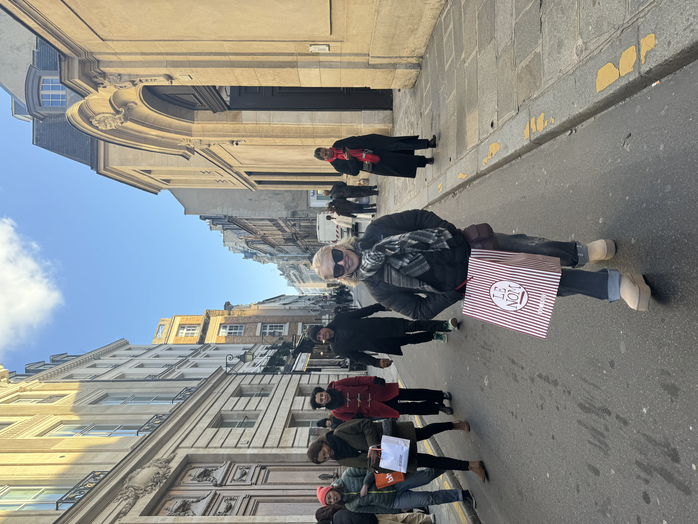

Meet Mara: The Inspiration Behind Build Buddy
Every great idea starts with a problem worth solving.

Why I Started Build Buddy
For me, the inspiration behind Build Buddy came from my mom, Mara.
Mara is in her early 50s, full of energy, and always looking for her next adventure. Whether she's walking her dog Bruno, spending time with friends, or exploring somewhere new, she loves staying active and enjoying life. She also has an appreciation for the finer things, especially when they don't come with an outrageous price tag.
Mara lives in a California home built in the 1970s. Although the house underwent a complete renovation before she moved in, years have passed, and she's ready for a change. Nothing major, just a few projects to modernize her space, refresh its appearance, and make her home feel new again.
Like many homeowners, Mara started by reaching out to contractors for estimates. After receiving countless quotes for different projects, she kept running into the same problem: the prices seemed far too high for the relatively simple improvements she wanted to make.
But here's the thing about Mara: she isn't afraid to roll up her sleeves and do the work herself.
The problem isn't a lack of motivation or willingness to learn. It's knowing where to begin. What materials should she buy? What tools will she need? How difficult is the project really going to be? And perhaps most importantly, what happens if something goes wrong halfway through?
These are the questions that can turn an exciting home improvement idea into something intimidating enough to never get started.
That's where the idea for Build Buddy was born.
I started thinking about how many people are probably in the exact same situation as my mom. Homeowners who have the creativity, motivation, and ability to improve their homes but lack the experience or guidance to confidently take on a project themselves.
What If There Were an Easier Way?
What if someone like Mara could simply take a picture of her living room, describe what she'd like to change, and instantly see what the finished project could look like?
Better yet, what if she could receive a personalized, step-by-step guide explaining how to bring that vision to life, complete with a list of materials, necessary tools, estimated costs, and guidance along the way?
That's the vision behind Build Buddy.
Build Buddy is designed to make home improvement more approachable by combining AI-powered design visualization with practical DIY project planning. Instead of spending hours searching through tutorials, guessing which materials to purchase, or paying someone else to do a project they might be capable of completing, homeowners can have a resource that helps guide them from their initial idea to the finished result.
Of course, not every project should be a DIY project. Some jobs require trained professionals, and Build Buddy is intended to help users recognize when professional assistance is the smarter and safer choice.
My goal isn't to replace contractors or convince everyone to become an expert builder overnight. It's to give everyday homeowners the confidence, knowledge, and resources to take on projects that might otherwise feel out of reach.
People like Mara shouldn't have to choose between paying a fortune and giving up on the home they've always imagined.
And that's why I'm building Build Buddy.
Dream it. Plan it. Build it.
Build Buddy is being created to help everyday homeowners turn their ideas into achievable projects, one step at a time.
See How Build Buddy Works